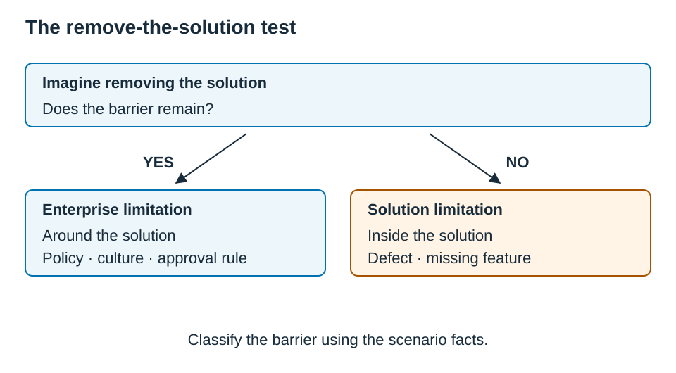

Chapter 9 — Context
9.0 — Domain Snapshot
| Item | Detail |
|---|---|
| Blueprint weight | 10% |
| Questions per ECBA exam | 5 out of 50 |
| Source | BABOK Guide |
| Activity Statements | 9.1, 9.2, 9.3, 9.4 |
| BACCM concept | Context — the circumstances that influence, are influenced by, and provide understanding of the change |
| A.S. | Full Activity Statement |
|---|---|
| 9.1 | Assist in validating information quality and alignment to your situation, and document those validation outcomes. |
| 9.2 | Support recognizing constraints and adapt plans to maintain alignment. |
| 9.3 | Assist in analyzing technology trends and support technology integration. |
| 9.4 | Apply relevant industry standards and frameworks to guide the work to be done. |
Domain 9 is built on the BACCM concept of Context, from Chapter 1, section 1.2, which is the circumstances that influence, are influenced by, and give understanding of the change. It can feel abstract, because it is not about one deliverable. Instead, it asks “what is shaping the work?”, which might be a regulation, a technology dependency, a standard template, an approval rule, an outdated attribute, or a barrier outside the solution. Your job is to identify the contextual influence, and choose the response that keeps the work aligned. The verbs, which are assist, support, apply, and document, keep the ECBA scope clear: you raise, support, document, and work within the chosen approach, and you work within the assigned decision, approval, and technical design responsibilities.
The distinction the exam tests hardest here is enterprise limitation versus solution limitation, which is a barrier around the solution as against a flaw inside it. There is a one-question test that settles it almost every time, shown in Figure 9.1.
Figure 9.1 — The remove-the-solution test

| Remove the solution — does the barrier remain? | Classification | Examples |
|---|---|---|
| Yes | Enterprise limitation (around the solution) | policy, culture, structure, a manual process, an approval rule |
| No | Solution limitation (inside the solution) | a defect, a missing feature, poor performance |
💡 Exam Tips — Domain 9
- This domain revisits the distinction between Verify and Validate. If it has not fully clicked from Chapters 5 and 6, it must click here.
- The nine quality characteristics support verification for further work. Distinguish Concise from Complete, Consistent from Unambiguous, and Feasible from Testable.
- Solution limitation, which is inside, versus enterprise limitation, which is around it, returns from Domain 8, and the “remove the solution” test still settles it.
- Context is not static, so when it changes, the business analyst helps adapt, under guidance.
Which activity statement is this? Here is a quick orientation before the detail.
| If the scenario is about… | A.S. |
|---|---|
| Information accuracy, attributes, approval status, where the current version lives | 9.1 |
| A constraint limiting the work; a barrier inside vs. around the solution | 9.2 |
| Technology trends, system integration, interface dependencies | 9.3 |
| Standards/frameworks, requirement quality, Verify vs. Validate | 9.4 |
9.1 — A.S. 9.1: Validate Information Quality
Activity Statement 9.1: “Assist in validating information quality and alignment to your situation, and document those validation outcomes.”
Reference Map: BABOK §3.4; BABOK §5.2; BABOK §5.5
Glossary: Approve Requirements and Designs, Document Analysis, Information management approach, Maintain Requirements and Designs.
Activity statement: IIBA ECBA Exam Blueprint V1.1; source mapping: ECBA Reference Map.
Source: BABOK Guide — Plan Business Analysis Information Management; Maintain Requirements and Designs; Approve Requirements and Designs.
What this means. Useful business analysis information is accurate, complete, consistent, accessible, and appropriate for the current situation. This activity statement is about keeping information usable, meaning organized, current, findable, and reliable enough to support continued work, and about the two tasks that act on it once it is captured: Maintain, which keeps existing valid information accurate, and Approve, which gets authorized agreement to proceed.
How it is tested. Expect a scattered-information scenario keyed to an information management approach, rather than “buy a tool,” a still-valid-but-stale-metadata scenario keyed to Maintain, and a Maintain-versus-Approve split, which is upkeep of existing information as against authorized sign-off.
🪞 Terminology Alert — “validate information quality.” The activity statement uses “validate” in a broad, everyday sense, meaning “is this information good enough and appropriate?” Do not confuse it with the formal Validate Requirements and Designs task, which is about business-goal alignment, and which lives in section 9.4. Here, “validate” means checking the quality and fit of the information, which is closer to verifying and maintaining than to value-alignment. A rule of thumb for the word “validate” on the exam is this: if the scenario is about the metadata, organization, currency, or accessibility of information, it is the casual 9.1 sense, which is quality and fit, so think Maintain or information management. If it is about whether requirements support the business goal or deliver value, it is the strict Validate task from section 9.4. Follow the scenario, rather than the word.
Keep Information Usable (Plan BA Information Management)
The information management approach defines how business analysis information is organized, the level of abstraction, the traceability approach, the plan for reuse, the storage and access, and the requirement attributes, which are metadata such as the ID, status, priority, source, and owner. The trap is reading “information management” as “IT picks a repository,” which is too narrow. The concern is whether business analysis information can be located, understood, maintained, protected, and reused. Document Analysis supports this when information is scattered across documents, policies, and prior artifacts.
Maintain vs. Approve
| Task | What triggers it | Example |
|---|---|---|
| Maintain Requirements and Designs | Existing, still-valid information needs accuracy upkeep | A status reads “draft,” or the source-stakeholder field is stale, on an otherwise-valid requirement |
| Approve Requirements and Designs | Authorized stakeholders must agree the work can proceed | A product owner signs off on the requirements baseline |
⚠️ Exam Trap — Maintain versus Approve. Maintain is the ongoing accuracy upkeep of existing information, including its content, relationships, and attributes, throughout and beyond the change. Approve is formal or informal acceptance by authorized stakeholders, so that work can proceed. Updating a stale attribute is Maintain. Signing off the baseline is Approve. Note also that approval does not fix poor quality, because conflicting or unverified requirements should be resolved before approval is sought. Approval only confirms authorized agreement that the information is ready for its next use.
💡 Exam Tip — A.S. 9.1. If the requirement’s content stays the same and only its metadata changes, that points to Maintain. If the question is who agrees the work can proceed, that points to Approve. If information is scattered and versions are unclear, that points to the information management approach, rather than a new tool.
In Practice — still right, just out of date. An approved shift-handover requirement is still completely correct, and nobody questions what it says. However, its owner field still names an analyst who left, and its priority was changed verbally in last week’s review without being recorded. No sign-off is being sought. It is tempting to reopen approval, on the reasoning that “something changed, so re-confirm it.” However, the requirement’s content has not changed at all, and only its attributes are stale. This is maintenance: correct the owner and the priority so that the maintained requirement stays accurate. There is no approval event, no removal, and no duplicate.
Exam Focus — A.S. 9.1
Traps. Check three distinctions here. The first is treating “validate information quality” as the Validate Requirements task, when it is the quality and fit of information as against business-goal alignment, from section 9.4. The second is Maintain versus Approve, which is accuracy upkeep as against authorized sign-off. The third is treating information management as buying a tool, when it is an approach, meaning organize, locate, trace, reuse, and protect.
How questions are framed. Expect four shapes. The first is scattered, conflicting-version information, which points to the information management approach. The second is a valid requirement with stale metadata, which points to Maintain. The third is a “who agrees we can proceed?” item, which points to Approve. The fourth is an “approval will fix the conflict” distractor, which is wrong, because you resolve the quality first.
Exam Lens C9-EL01
A.S.: 9.1
Stem. A requirement is still valid, but its status field says “draft,” its source stakeholder has left the initiative, and its priority was changed in the last review. No sign-off is being sought. What should the BA support next?
Options.
- A. Request approval of the requirement, since the requirement itself has not changed.
- B. Update the relevant attributes so the maintained requirement stays accurate.
- C. Remove the requirement until the new stakeholder confirms every detail.
- D. Create a new requirement to avoid changing the historical record.
C9-EL01 — Show answer and explanation
C9-EL01 — Answer: B
| ID | Answer | Domain | A.S. | Type | Difficulty | Source |
|---|---|---|---|---|---|---|
| C9-EL01 | B | 9 | 9.1 | situation | medium | BABOK §5.2; BABOK §5.5 |
A. No sign-off is sought; the immediate issue is stale information.
B. Updating attributes maintains the valid requirement accurately.
C. Removal would discard valid information without a stated reason.
D. Duplicating the requirement creates another record instead of maintaining the existing one.
Reasoning (two-step). In Step 1, option C removes valid information and creates a gap, and option D duplicates rather than maintains. You can eliminate both. In Step 2, you choose between A and B. No sign-off is being sought, and the content is unchanged, so this is not an approval event. It is accuracy upkeep of stale attributes, which is Maintain. Option B fits.
Source detail: BABOK §5.2; BABOK §5.5
Review: A.S. 9.1
9.2 — A.S. 9.2: Recognize and Adapt to Constraints
Activity Statement 9.2: “Support recognizing constraints and adapt plans to maintain alignment.”
Reference Map: BABOK §6.1; BABOK §8.3; BABOK §8.4
Glossary: Analyze Current State, Constraint, Enterprise limitation, Risk, Risk Analysis and Management, Solution limitation.
Activity statement: IIBA ECBA Exam Blueprint V1.1; source mapping: ECBA Reference Map.
Source: BABOK Guide — Analyze Current State; Assess Solution Limitations; Assess Enterprise Limitations.
What this means. Constraints are contextual boundaries, because they shape what can be done and what plans must change. A constraint can appear before a solution is chosen, during analysis, during implementation, or after a solution is in use. The recurring question is this: is the limiting factor inside the solution, or around it?
How it is tested. Expect a “works but no value” scenario keyed to an enterprise limitation, which is the Domain 8 distinction returning, a constraint-versus-risk split, which is a fixed boundary as against an uncertainty about it, and recognizing a regulatory, technical, budget, or time constraint that must shape the analysis.
Constraint Types
| Type | A boundary that… | Example |
|---|---|---|
| Technical | a technology limit imposes | A legacy system cannot support real-time integration |
| Organizational | a structure/policy/culture imposes | A regional approval policy slows processing |
| Regulatory | a law/audit/compliance imposes | Records must be retained seven years |
| Budget | a funding limit imposes | Only one release can be funded this quarter |
| Time | a deadline imposes | A regulation takes effect in 90 days |
Analyze Current State is mainly tested here through these constraints, such as regulations, policies, technology limits, structure, and infrastructure. A current-state constraint is not automatically a solution limitation, because the limit may be a contextual boundary that shapes the analysis rather than a shortcoming of the solution.
Solution vs. Enterprise Limitations (returning from Domain 8)
You met this pair in Domain 8, section 8.2. The defining cut is unchanged: a barrier sits either inside the solution or around it, as the table below shows.
| Barrier | Where it lives | Example |
|---|---|---|
| Solution limitation | Inside — defect, missing function, poor performance, usability | Search takes 30s because an indexing component is misconfigured |
| Enterprise limitation | Around — culture, incentives, operations, structure, infrastructure | A separate HR policy requires manual approval outside the system |
⚠️ Exam Trap — solution versus enterprise limitation (the “remove the solution” test, from section 8.2). As an initial heuristic, mentally remove the solution and ask whether the barrier would still exist. If yes, it is an enterprise limitation, which is around it. If no, it is a solution limitation, which is inside it. A solution that works exactly as designed but still delivers no value because of policy, culture, incentives, or reporting structure is an enterprise limitation, because the delayed outcome is a symptom, rather than proof that the defect is inside the solution.
Constraint vs. Risk
A constraint and a risk are different things, and the exam pairs them, as the table below shows.
| Constraint | Risk | |
|---|---|---|
| What it is | A known, fixed boundary | An uncertain event and its effect |
| Example | “The supplier contract caps us at 5,000 verification calls/day” | “A seasonal campaign might exceed that cap, possibly disrupting onboarding” |
| BA action | Recognize it; let it shape the plan | Analyze probability/impact; prepare a response |
Risk Analysis and Management is the technique here, because a constraint often creates a risk. A deadline is a constraint, while missing it is the risk. “Adapt plans” does not mean the entry-level business analyst rewrites the initiative. It means supporting updates so that the approach stays aligned: flagging the issue, documenting the impact, supporting the risk analysis, updating the information, and helping stakeholders see options.
💡 Exam Tip — A.S. 9.2. A fixed, known limit is a constraint, while an uncertain event that may or may not happen is a risk. A scenario can contain both, so name each one separately.
In Practice — the dashboard nobody fed. A new customer-analytics dashboard is deployed, and its data connectors work exactly as designed, with no defect anywhere in the build. Yet the insight that executives wanted never appears, because regional business units quietly withhold their customer data. Their bonuses reward local ownership of accounts, and the reporting lines reinforce that turf. This is not the familiar “an old manual channel stayed open” problem, because nothing technical is being bypassed. People are choosing not to contribute, because the incentives and the reporting structure tell them not to. Run the test anyway: remove the dashboard entirely, and the incentive model and the reporting lines are still there, still rewarding the same behavior. The barrier is cultural and structural, which is around the solution, so it is an enterprise limitation, and that is what the business analyst flags.
Exam Focus — A.S. 9.2
Traps. Check three distinctions here. The first is solution versus enterprise limitation, which is inside as against around, and the heuristic helps frame an investigation but evidence establishes the limitation. The second is constraint versus risk, which is a known fixed boundary as against an uncertain event with an effect. The third is treating a symptom as a solution defect, when a delayed outcome can trace to an enterprise barrier.
How questions are framed. Expect three shapes. The first is a “works as designed but no value” scenario, blocked by incentives, policy, or structure, which points to an enterprise limitation. The second is a fixed limit beside an uncertainty about it, where you name the constraint and the risk separately. The third is a regulation or policy that must shape the current-state analysis.
Exam Lens C9-EL02
A.S.: 9.2
Stem. A supplier contract fixes a hard limit of 5,000 identity-verification calls per day. The limit is firmly known, but the team is unsure whether an upcoming seasonal campaign will exceed it, how badly onboarding could be disrupted if it does, and what fallback to prepare. How should the BA BEST treat these two things?
Options.
- A. Both the daily limit and the possible overflow are risks, since both involve the supplier.
- B. Both are constraints, since both restrict what the team can do.
- C. The known daily limit is a constraint; uncertain overflow and disruption are a risk.
- D. The daily limit is a risk; the campaign overflow is a constraint that cannot be changed.
C9-EL02 — Show answer and explanation
C9-EL02 — Answer: C
| ID | Answer | Domain | A.S. | Type | Difficulty | Source |
|---|---|---|---|---|---|---|
| C9-EL02 | C | 9 | 9.2 | situation | medium | BABOK §6.1; BABOK §6.3 |
A. The stated daily cap is a known boundary; the uncertain overflow creates exposure.
B. The possible overflow is uncertain, rather than a fixed boundary.
C. The cap is the constraint; exceeding it and disrupting onboarding is the risk scenario.
D. This reverses the known boundary and uncertain event.
Reasoning (two-step). In Step 1, option D inverts the terms, because the fixed cap is the known boundary, rather than the uncertainty, and option A calls the firmly known cap a risk. You can eliminate both. In Step 2, you choose between B and C. The cap is a fixed, known boundary, which is a constraint, while “might exceed it, possibly disrupting onboarding” is an uncertain event with an effect, which is a risk. Calling both constraints, which is option B, misses the uncertainty. Option C fits.
Source detail: BABOK §6.1; BABOK §6.3
Review: A.S. 9.2
9.3 — A.S. 9.3: Technology Trends and Integration
Activity Statement 9.3: “Assist in analyzing technology trends and support technology integration.”
Reference Map: BABOK §7.4
Glossary: Business Rules Analysis, Define Requirements Architecture, Interface requirements, Requirements architecture, Solution architecture.
Activity statement: IIBA ECBA Exam Blueprint V1.1; source mapping: ECBA Reference Map.
Source: BABOK Guide — Define Requirements Architecture.
What this means. Technology is part of context. You support integration by organizing technology-related requirements, interfaces, dependencies, and stakeholder views, without making the technical design decisions. You are not the architect. You recognize how technology affects requirements, and how requirements must be structured so that the change works as a whole.
How it is tested. Expect an integration scenario where stakeholders disagree on which requirements depend on which interface, keyed to documenting requirements and dependencies, which is requirements architecture, with technical design, such as API specs, platform choice, or schedules, as the bait. A second angle is requirements architecture versus solution architecture, again.
Organize Technology Requirements (Define Requirements Architecture)
Requirements architecture structures requirements and their relationships so that they collectively support the objectives. In integration scenarios, it organizes the interfaces, which are the requirements that relate to system-to-system exchanges, the dependencies, which are the requirements that rely on others, the stakeholder views, the compatibility concerns, and the traceability. A technology trend is context too. The business analyst does not pick the trend to adopt. Instead, it helps stakeholders analyze how a trend may affect needs, requirements, constraints, and integration points. To picture how a trend shows up on the exam: an AI-adoption trend raises new data-quality and privacy requirements; a cloud-migration trend introduces integration and security constraints; and a mobile-first trend changes usability and accessibility requirements. In each one, the contribution of the business analyst is identifying the requirement and constraint impacts, rather than deciding whether to adopt the trend. Business Rules Analysis can express technology constraints as rules, for example “customer data must be encrypted before exchange with external systems,” which makes them visible and traceable.
⚠️ Exam Trap — requirements architecture versus solution architecture (from section 6.3). The cut is unchanged. Requirements architecture organizes requirements, dependencies, and views, and that is business analysis work. Solution architecture designs the API, the schema, the platform, and the protocols, and that requires the technical expertise and responsibility specified in the scenario. “Which requirements depend on the data-exchange requirement” points to requirements architecture. “Which protocol the API gateway will use” points to solution architecture. If an option has the business analyst selecting the platform, designing the API, assigning technical work, or choosing the integration pattern, be suspicious.
💡 Exam Tip — A.S. 9.3. The ECBA answer keeps the business analyst on requirements, relationships, and dependencies, facilitating between business and technical stakeholders and documenting integration requirements, rather than deciding the technology.
In Practice — three systems, one disputed web of dependencies. A new fraud-screening service must exchange data with the order system, the billing system, and a reporting database, and stakeholders disagree about which requirements depend on which interface. The pull toward “just have someone design the APIs” is strong. However, that is solution architecture, and it is not the entry-level business analyst’s call. What the business analyst supports is the requirements side: documenting the interface-related requirements and the dependencies among them, so that the team can see how the pieces must work together before anyone designs a component.
Exam Focus — A.S. 9.3
Traps. Check three distinctions here. The first is requirements architecture versus solution architecture, which is organizing requirements and dependencies as against designing the technical system. The second is the business analyst deciding the technology, when the business analyst supports requirements and facilitates, rather than selecting platforms or designing APIs. The third is treating a schedule or ownership as the answer, because those do not clarify the requirements relationships.
How questions are framed. Expect three shapes. The first is a multi-interface integration with disputed dependencies, which points to documenting the interface requirements and dependencies. The second is a “should we adopt this trend or platform?” item, which you reframe to what requirements and constraints it affects. The third is a requirements-versus-solution-architecture classification.
Exam Lens C9-EL03
A.S.: 9.3
Stem. A new fraud-screening service must exchange data with the order system, the billing system, and a reporting database. Stakeholders disagree about which requirements depend on which interface. Working under guidance and from a requirements perspective, what should the BA MOST appropriately support?
Options.
- A. Producing the final API specification for each of the three interfaces.
- B. Documenting the interface-related requirements and the dependencies among them.
- C. Choosing which integration platform the team should standardize on.
- D. Building the delivery schedule that assigns each interface to a development team.
C9-EL03 — Show answer and explanation
C9-EL03 — Answer: B
| ID | Answer | Domain | A.S. | Type | Difficulty | Source |
|---|---|---|---|---|---|---|
| C9-EL03 | B | 9 | 9.3 | situation | medium | BABOK §7.4 |
A. The assignment is requirements clarification, rather than final technical interface design.
B. Interface requirements and dependencies help the set work together coherently.
C. The assignment does not give platform-selection authority to the analyst.
D. A delivery schedule does not clarify the requirements’ relationships.
Reasoning (two-step). First identify the requested requirements perspective. Then compare clarifying requirements and dependencies with technical specifications, platform decisions, or delivery scheduling. The assignment calls for the requirements work.
Source detail: BABOK §7.4
Review: A.S. 9.3
9.4 — A.S. 9.4: Apply Standards and Frameworks
Activity Statement 9.4: “Apply relevant industry standards and frameworks to guide the work to be done.”
Reference Map: BABOK §3.1; BABOK §7.2
Glossary: Cohesion, Completeness, Atomic, Concise, Unambiguous, Prioritized, Understandable, Consistency, Correctness, Feasibility, Methodology Knowledge, Modifiability, Plan Business Analysis Approach, Testability, Validate Requirements and Designs, Verify Requirements and Designs.
Activity statement: IIBA ECBA Exam Blueprint V1.1; source mapping: ECBA Reference Map.
Source: BABOK Guide — Plan Business Analysis Approach; Verify Requirements and Designs.
What this means. Standards and frameworks guide the approach, representations, review criteria, and governance used for business analysis. BABOK §3.1 helps tailor the approach; BABOK §7.2 checks whether requirements and designs are usable for further work. Its nine named characteristics are listed below. Validation against business value is a related, separate check (BABOK §7.3).
How it is tested. Identify whether the scenario concerns representation quality, business-value alignment, or compliance with an agreed approach. Apply the nine BABOK quality characteristics and any explicitly stated local checklist criteria without treating additional engineering terms as names from the BABOK list.
Standards Shape the Approach (Plan BA Approach)
A methodology, a framework, business policies, regulation, and the risk level all shape the business analysis approach, by influencing the activities, the formality, the documentation, and the governance. At the ECBA level the business analyst applies and follows the relevant approach under guidance. It does not invent the organization’s methodology, waive a regulatory standard, or swap in a preferred prior method because it feels easier. Methodology Knowledge is the competency here: learn the current approach and align to it, rather than replacing it.
The Whole Map First: Verify vs. Validate, and the Nine Characteristics
Before the look-alike pairs, here is the full map. Verify and Validate are the two checks on developed requirements, and you met them in Chapter 5, section 5.2, as the table below shows.
| Verify | Validate | |
|---|---|---|
| Core question | “Is it usable for further work?” (good enough to use) | “Is it the right thing?” |
| Focus | Quality of the requirement as written/modelled | Alignment to business goals and value |
| Signal words | vague, incomplete, inconsistent, untestable, infeasible | objective, goal, outcome, value, business need |
| ECBA action | Check characteristics, flag issues, raise for rework | Check alignment, flag misalignment, support review |
BABOK §7.2 names nine characteristics. Quality depends on the intended users and the next work to be done; completeness and verification detail vary with the life-cycle stage and level of abstraction. The following explanations are paraphrased from BABOK §7.2.4.
| Characteristic | Means | Trigger |
|---|---|---|
| Atomic | Stands on its own as one understandable requirement or design item | Several dependent obligations bundled together |
| Complete | Contains the detail needed for subsequent work | A necessary rule or condition is missing |
| Consistent | Aligns with stakeholder needs and does not conflict with other requirements | Incompatible rules or needs |
| Concise | Omits unnecessary content | Irrelevant material obscures the requirement |
| Feasible | Can reasonably be achieved within agreed risk, time, and budget, or merits investigation | Constraints make the proposal unrealistic |
| Unambiguous | Makes fulfillment of the need clear | Several plausible interpretations |
| Testable | Allows fulfillment to be checked at the relevant level of abstraction | No way to establish whether it is met |
| Prioritized | Has an agreed relative importance or value | No basis for ordering work |
| Understandable | Uses terms familiar to its intended audience | Unexplained jargon prevents shared understanding |
⚠️ Exam Trap — Verify versus Validate (the central pair). Verify is about quality, or “usable for further work,” which is the nine characteristics. Validate is about value, or the “right thing,” which is business-goal alignment. When a scenario says the requirements are well-written and yet something is still wrong, because they are clear, complete, and testable, but no longer support a revised objective, think Validate, because the quality issue is already ruled out, so the open question is alignment.
The characteristic pairs to compare are set out below, cross-referenced to where they are also flagged, in Chapters 5 and 6.
⚠️ Exam Trap — concise versus complete. Irrelevant content calls conciseness into question; missing necessary detail calls completeness into question. A shorter requirement is not automatically a complete one.
⚠️ Exam Trap — consistent versus unambiguous. Conflicting requirements or misalignment with stakeholder needs concern consistency. Several possible readings concern ambiguity. Check both against their sources; a clear sentence can still conflict with an agreed policy.
⚠️ Exam Trap — feasible versus testable. Feasibility asks whether the requirement can reasonably be achieved under the constraints. Testability asks how fulfillment can be checked. Cohesion, correctness, and modifiability can be useful local review terms, but they are not names in the nine-item BABOK §7.2 list. A tailored checklist may include additional concerns.
💡 Exam Tip — A.S. 9.4. For a quality-characteristic question, ignore whether the requirement is valuable, because that is Validate. First ask what is wrong with the requirement as written, or with the set as organized, and then match the characteristic, checking the look-alike partner before you commit.
In Practice — well-written, and pointing at the old goal. A business analyst has verified a requirements set for a new customer portal: it is well-written, complete, consistent, and all testable. Quality is not the problem. However, in review, a senior manager notes that the portal was scoped to reduce call-center volume, while most of the requirements add new self-service features instead. Nothing about the wording is wrong, so this is not a Verify issue, and it is not “completeness,” because the set is complete as specified. The gap is alignment to the original objective, which is a Validate issue. The business analyst flags that the value link is in doubt, for the people who own the objective to weigh.
Exam Focus — A.S. 9.4
Traps. Distinguish requirement/design quality from business-value alignment, necessary detail from unnecessary content, conflicting statements from ambiguous wording, and feasibility from testability. Apply the agreed approach and raise proposed improvements through its governance. Do not replace the BABOK list with a local checklist.
How questions are framed. Ask whether the requirement is usable, supports the intended value, and meets the applicable standards. When a scenario supplies a tailored checklist, use its stated criterion; otherwise use the source definitions.
Exam Lens C9-EL04
A.S.: 9.4
Stem. During a verification review, a requirement says regional tax rates must be configurable. The reviewer notes the related design stores each rate separately inside dozens of screen-specific rules, so one future tax change would mean editing many places and could leave the system behaving inconsistently. The requirement does not contradict any other requirement. Which quality characteristic should the BA MOST directly question? The team’s tailored checklist defines modifiability as avoiding scattered edits and excessive ripple effects; use that stated criterion rather than treating it as a name in the nine BABOK characteristics.
Options.
- A. Consistency, because the design could lead to inconsistent behavior.
- B. Modifiability, because one change requires scattered, error-prone edits.
- C. Completeness, because some tax rules may be missing.
- D. Correctness, because a tax value may be wrong.
C9-EL04 — Show answer and explanation
C9-EL04 — Answer: B
| ID | Answer | Domain | A.S. | Type | Difficulty | Source |
|---|---|---|---|---|---|---|
| C9-EL04 | B | 9 | 9.4 | situation | medium | BABOK §7.2.4 |
A. Possible later inconsistency is a consequence, rather than the stated checklist concern.
B. The design fails the scenario’s explicit modifiability criterion; this is supplementary checklist vocabulary.
C. No missing tax rule is identified.
D. No inaccurate tax value is identified.
Reasoning (two-step). First use the tailored checklist criterion explicitly supplied in the question. Then distinguish scattered edits from a present conflict, missing rule, or wrong value. Modifiability is supplementary checklist vocabulary here, rather than a BABOK quality-characteristic name.
Source detail: BABOK §7.2.4
Review: A.S. 9.4
Quick Drill — Which Quality Characteristic?
The nine BABOK §7.2 characteristics are Atomic, Complete, Consistent, Concise, Feasible, Unambiguous, Testable, Prioritized, and Understandable. Use the intended audience and the next work to judge how much detail is enough.
| Review observation | Characteristic to check |
|---|---|
| Several separately understandable obligations are bundled into one item. | Show answerAtomic |
| A necessary retention condition is missing. | Show answerComplete |
| Two requirements impose incompatible limits. | Show answerConsistent |
| Unrelated cafeteria rules appear in inventory requirements. | Show answerConcise |
| The requested throughput exceeds the available capacity and budget. | Show answerFeasible |
| Readers disagree about the meaning of a condition. | Show answerUnambiguous |
| No evidence could establish whether fulfillment occurred. | Show answerTestable |
| Relative importance has not been agreed. | Show answerPrioritized |
| The intended readers do not understand the terminology. | Show answerUnderstandable |
Use the specific defect: unnecessary content concerns Concise; missing essential detail concerns Complete; conflicting statements concern Consistent; multiple readings concern Unambiguous. Check feasibility, fulfillment evidence, independence, relative priority, and audience understanding as well.
Chapter 9 — Summary
- Domain 9 is worth 10% — about 5 questions — and is built on the BACCM concept of Context: the circumstances shaping the change. The exam pattern is to identify the contextual factor, then choose the entry-level response. The BA supports, documents, raises, applies, and adapts — under guidance.
- Information quality (9.1). Keep BA information usable through an information management approach (organize, locate, trace, reuse, protect — not just a tool). Maintain keeps existing valid information accurate; Approve is authorized agreement to proceed — and approval does not fix quality problems.
- Constraints (9.2). A constraint is a known, fixed boundary; a risk is an uncertain event with an effect — name each separately. A solution limitation is inside the solution; an enterprise limitation is around it (the heuristic must be checked against evidence).
- Technology integration (9.3). Support requirements architecture — interface requirements, dependencies, views — not the technical design (API, schema, platform). The BA helps analyze how a technology trend affects requirements; it does not pick the trend.
- Standards & quality (9.4). Apply and tailor the agreed approach through its governance. Verify checks Atomic, Complete, Consistent, Concise, Feasible, Unambiguous, Testable, Prioritized, and Understandable. Validate checks value alignment.
Chapter 9 — Exam Essentials
Use this as your prioritized revision list — what to memorize, what to recognize, and what to watch.
Memorize exactly.
- Context, in the BACCM, is the circumstances that influence, are influenced by, and give understanding of the change.
- Verify is usable for further work, which is quality, while Validate is the right thing, which is value alignment.
- The nine Verify quality characteristics: Atomic, Complete, Consistent, Concise, Feasible, Unambiguous, Testable, Prioritized, and Understandable.
- A constraint is a known, fixed boundary, while a risk is an uncertain event with an effect.
Recognize by clues.
- Scattered information with unclear versions points to the information management approach; stale metadata on valid information points to Maintain; and authorized sign-off to proceed points to Approve.
- A solution that works as designed but delivers no value, blocked by policy, culture, incentives, or structure, points to an enterprise limitation, while a defect, a missing function, a slow or unusable solution inside points to a solution limitation.
- A disputed “which requirements depend on which interface” points to requirements architecture, while “design the API, schema, or platform” points to solution architecture, which is a distinct technical design responsibility in these scenarios.
- Vague, incomplete, inconsistent, untestable, or infeasible points to Verify, while clear but not supporting the revised objective points to Validate.
- Distinguish Concise from Complete, Consistent from Unambiguous, and Feasible from Testable. Atomic, Prioritized, and Understandable complete the nine-item list.
Watch (traps).
- “Validate information quality” in 9.1 is not Validate Requirements in 9.4, which is the fit and quality of information as against business-goal alignment.
- Maintain is not Approve, and approval does not fix quality.
- A constraint is not a risk, which is a known boundary as against an uncertain event.
- A solution limitation is not an enterprise limitation, which is inside as against around, and the heuristic helps frame an investigation but evidence establishes the limitation.
- Requirements architecture is not solution architecture.
- Verify is not Validate. Use the nine named BABOK characteristics, and read any additional local checklist criterion explicitly stated in the scenario.
- The ECBA business analyst applies, supports, documents, and adapts under guidance. Use assigned design and approval responsibilities, comply with applicable standards, and follow governance when proposing a change of approach.
Distinctions at a Glance
Domain 9 is the most distinction-dense domain, so here they are in one place for last-minute review. Every row is taught above, and nothing here is new.
| Distinction | The tell |
|---|---|
| Verify vs. validate | usable for further work (quality) vs. right thing (value) |
| Concise vs. Complete | Unnecessary content vs. missing necessary detail |
| Consistent vs. Unambiguous | Conflicting statements vs. multiple interpretations |
| Feasible vs. Testable | Achievable under constraints vs. fulfillment can be checked |
| Maintain vs. approve | Accuracy upkeep vs. authorized sign-off |
| “Validate info quality” (9.1) vs. Validate Reqs (9.4) | Fit/quality of information vs. business-goal alignment |
| Constraint vs. risk | Known fixed boundary vs. uncertain event with effect |
| Solution vs. enterprise limitation | Inside the solution vs. around it |
| Requirements vs. solution architecture | Organize requirements vs. design the technical system |
🚀 Fast Track — Domain 9 (last-minute). Verify checks quality for further work; Validate checks value alignment. Review the nine BABOK characteristics, keep maintenance broad enough to include content and reuse, and distinguish solution from enterprise limitations using evidence.
Chapter 9 — Practice Questions
Attempt all eight under exam discipline before you check your answers, and aim for about 90 seconds per question. This is the deepest distinction domain: Verify versus Validate, plus the nine quality characteristics, and the solution-versus-enterprise-limitation split. Full answers and rationale are in Practice Answers & Rationale at the back of the book.
C9-Q01
A.S.: 9.1
An approved requirement for shift-handover reporting is still correct and no one is questioning what it says. But its owner field still names an analyst who left the team, and its priority was changed verbally in last week’s review without being recorded. No sign-off is being sought right now. Which task does this work BEST fit?
- A. Approve Requirements and Designs, because authorized stakeholders must re-confirm the requirement.
- B. Define Requirements Architecture, because the requirement must be reorganized within the set.
- C. Validate Requirements and Designs, because the requirement must be re-checked against business value.
- D. Maintain Requirements and Designs, because the requirement is valid but its attributes are out of date.
C9-Q02
A.S.: 9.1
Requirements for an initiative are spread across two shared drives, a spreadsheet, and an email thread. Stakeholders cannot tell which version is current, and two copies now state different approval limits for the same rule. Working under guidance, what should the analyst support FIRST?
- A. Apply an information management approach defining how the information is organized, stored, accessed, and kept current.
- B. Ask IT to purchase a single enterprise requirements-management tool to replace all current storage.
- C. Delete the older copies so only one version of each requirement remains.
- D. Pause all requirements work until a single owner is appointed for every document.
C9-Q03
A.S.: 9.2
A new customer-analytics dashboard has been deployed and its data connectors work exactly as designed. Yet expected value is not realized, because regional business units withhold their customer data — their incentive model rewards local ownership of accounts, and reporting lines reinforce that behavior. How should this barrier BEST be classified?
- A. A solution limitation, because the dashboard is not producing the expected value.
- B. An enterprise limitation: incentives and reporting structures block data sharing.
- C. A testability issue, because the dashboard’s value cannot be measured.
- D. A risk, because the data may or may not be withheld in future periods.
C9-Q04
A.S.: 9.2
A supplier contract fixes a hard daily limit of 5,000 identity-verification calls. The limit itself is firmly known, but the team is unsure whether an upcoming seasonal campaign will exceed it, how badly onboarding could be disrupted if it does, and what fallback to prepare. Which BEST describes how the analyst should treat these two things?
- A. Both the daily limit and the possible overflow are risks, since both involve the supplier.
- B. Both are constraints, since both restrict what the team can do.
- C. The known daily limit is a constraint; uncertain overflow and disruption are a risk.
- D. The daily limit is a risk; the campaign overflow is a constraint that cannot be changed.
C9-Q05
A.S.: 9.3
A new fraud-screening service must exchange data with the order system, the billing system, and a reporting database. Stakeholders disagree about which requirements depend on which interface. Working under guidance and from a requirements perspective, what should the analyst MOST appropriately support?
- A. Producing the final API specification for each of the three interfaces.
- B. Documenting the interface-related requirements and the dependencies among them.
- C. Choosing which integration platform the team should standardize on.
- D. Building the delivery schedule that assigns each interface to a development team.
C9-Q06
A.S.: 9.4
A requirement is clear, complete, and testable, and follows the team's template. During review, however, no one can explain how it still supports the business goal after that goal was recently revised. Which concept is MOST directly being questioned, and why?
- A. Verification, because the requirement may not be written to a usable quality standard.
- B. Verification happens only after the solution is built, so the timing is wrong to check it now.
- C. Approval, because a revised goal means the requirement must simply be re-signed.
- D. Validation, because the question concerns alignment to the revised goal and value.
C9-Q07
A.S.: 9.4
During a verification review, a requirement states that regional tax rates must be configurable. The reviewer notes that the related design stores each rate separately inside dozens of screen-specific rules, so a single future tax change would mean editing many places and could easily leave the system behaving inconsistently. The requirement does not contradict any other requirement. The team’s tailored verification checklist defines modifiability as the ability to change the design without scattered edits and excessive ripple effects. Which checklist concern should the analyst MOST directly question?
- A. Modifiability, because the design cannot be changed cleanly — a single tax update requires edits in many scattered places.
- B. Consistency, because the design could produce inconsistent behavior across different parts of the system.
- C. Completeness, because some of the regional tax rules may be absent from the requirements.
- D. Correctness, because one or more of the configured tax rate values may be inaccurate.
C9-Q08
A.S.: 9.4
A reviewer is verifying the requirements set for a warehouse-inventory initiative. The set covers receiving, storage, and picking in detail — but it also contains two requirements about planning the staff cafeteria menu, which have nothing to do with inventory. Which quality characteristic is MOST directly missing?
- A. Completeness, because required inventory information may be absent.
- B. Correctness, because the cafeteria requirements may be inaccurate.
- C. Concise, because the set includes unnecessary content unrelated to the inventory need.
- D. Testability, because the unrelated requirements make it harder to design a focused verification review.